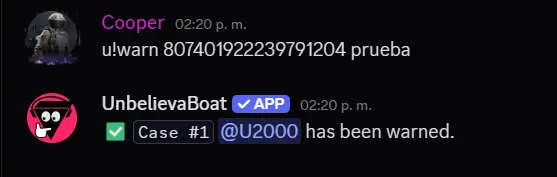
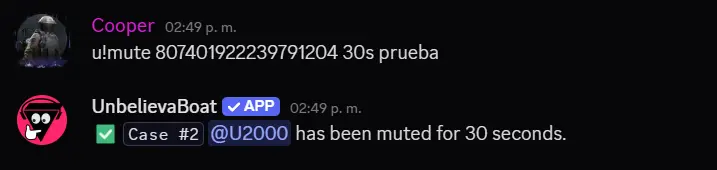
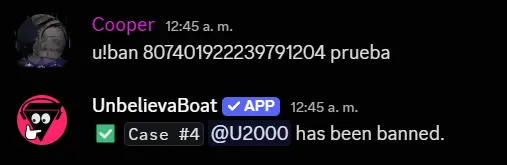
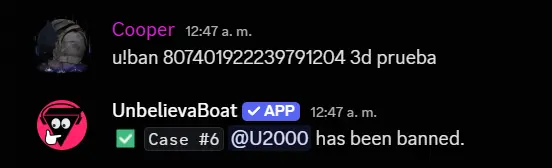
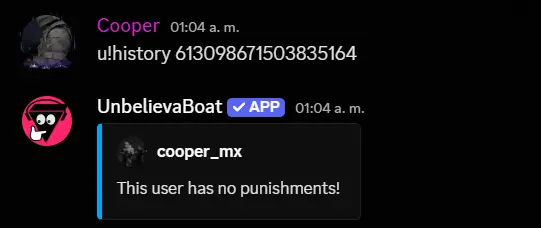
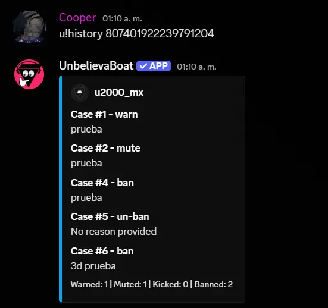
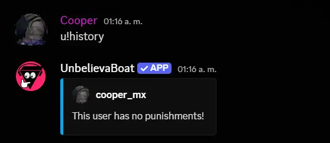
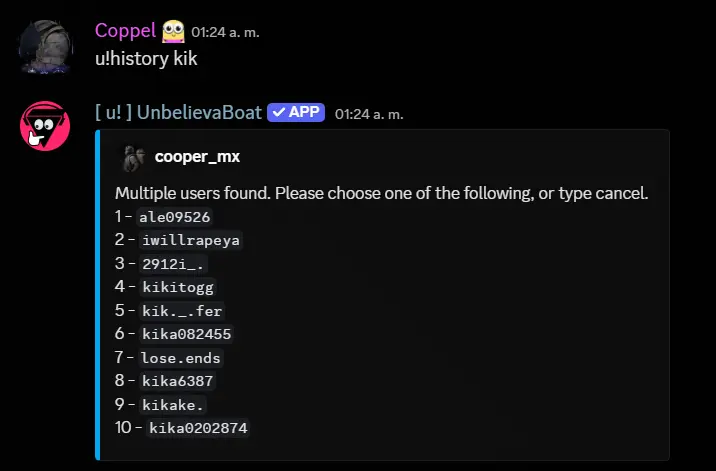

#
5.3 ❯ ⛵ Comandos de UnbelievaBoat

Como Staff se te implemtentara los recursos necesarios para sancionar a dicho usuario que este infligiendo las reglas del servidor. En este recurso se te dara la informacion de que comandos tienes disponibles para actuar en una situacion. Si vas comenzando como @+˚₊✧༺ Tier 𝐈 ᴬᴾᴿᴱᴺᴰᴵᶻ ༻✧₊˚+ estos seran los comandos que tienes disponibles.
u!history
u!profile o u!user
u!k o u!kick
u!m o u!mute
u!w o u!warn
u!view-case o u!case
u!purge
u!unmute
Discord también inplementara herramientas para moderación en Canales de voz, en caso que haya alguna situación donde tengas que usar las herramientas estas son las siguientes:
Silenciar servidor
Ensordecer servidor
Desconectar
"Vista de moderador"
Suspender al usuario
Expulsar al usuario
"Mover a"
Los comandos señalados en Morado son los que tienes permitido usar en tu nivel de Aprendiz. Los comandos con el color Rojo son los comandos que no podrá ejecutar un aprendiz:
Mas adelante te enseñare como usar cada comaando y su estructura, al igual te presentare ejemplos en imagen de como quedaria el "resultado de la ejecución del comando".
u!warn [ID del usuario] [razón]
- Sirve para advertir a un usuario que ha infringido las reglas del servidor. La advertencia se registra en su historial y puede influir en futuras sanciones si el comportamiento persiste.
Este es un ejemplo de como se veria el comando para que puedas entender mejor su estructura:

u!mute [ID del usuario] [tiempo] [razón]
- Silencia a un usuario, impidiéndole el acceso y/o envío de mensajes en los canales de texto y voz. El mute puede ser temporal si se especifica un tiempo, o permanente si se omite dicho parámetro. Es útil para moderar el comportamiento sin necesidad de expulsar al usuario del servidor.
- Esta sancion la puede ejecutar un "Helper" (Tier II), "Mod" (Tier III) o "Admin" (Tier IV). El rol de "Aprendiz" (Tier I) no podra ejecutar este comando.
Aqui te dejare un ejemplo de como se veria el comando:
En la siguiente imagen te dejo un ejemplo de como se veria el comando sin especificar el tiempo de la sancion:
- Aqui como no se especifica el tiempo el mute es permanente, donde el usuario no podra enviar mensajes en canales de texto y voz.
En la siguiente imagen te dejo un ejemplo de como se veria el comando especificando el tiempo de la sancion:

- Aqui como se especifica el tiempo el mute es temporal. donde el usuario no podra enviar mensajes en canales de texto y voz por 30 segundos. En este tipo de sanciones es muy importante que especifiques el tiempo para que el usuario sepa cuanto tiempo estara sancionado, de lo contrario el mute sera permanente como en el ejemplo anterior. Aqui te mostrare como se especifica el tiempo en el comando:
s (segundos) ・ m (minutos) ・ h (horas) ・ d (días) ・ w (semanas) ・ mth (meses) ・ y (años)
Si realizas el comando con alguno de estos parametros el bot lo reconocera y aplicara el tiempo que le indiques.
u!ban [ID del usuario] [tiempo] [razón]
- Este comando es especial para "expulsar" a un usuario de manera indefinida del servidor. El ban elimina al usuario del servidor y le impide volver a unirse a menos que sea desbaneado por un moderador. Es una medida severa utilizada para infracciones graves de las reglas del servidor.
- El tipo de comando que se ejecuta es igual que el formato del comando del mute, donde puedes especificar el tiempo o no. Si no se especifica el tiempo el ban sera indefinido.
- Esta sancion la puede ejecutar un "Helper" (Tier II), "Mod" (Tier III) o "Admin" (Tier IV). El rol de "Aprendiz" (Tier I) no podra ejecutar este comando.
En la siguiente imagen te dejo un ejemplo de como se veria el comando sin especificar el tiempo de la sancion:

- Aqui como no se especifica el tiempo el ban es indefinido, donde el usuario no podra volver a unirse al servidor.

- Aqui como se especifica el tiempo el ban es temporal. donde el usuario no podra volver a unirse al servidor por 3 dias. En este tipo de sanciones es muy importante que especifiques el tiempo para que el usuario sepa cuanto tiempo estara sancionado, de lo contrario el ban sera indefinido como en el ejemplo anterior. Aqui te mostrare como se especifica el tiempo en el comando:
s (segundos) ・ m (minutos) ・ h (horas) ・ d (días) ・ w (semanas) ・ mth (meses) ・ y (años)
Los parametros no cambian, si realizas el comando con alguno de estos parametros el bot lo reconocera y aplicara el tiempo que le indiques. En caso de que el usuario quiera volver a unirse al servidor tendra que esperar a que se cumpla el tiempo del ban o que un moderador lo desbanee.
u!history [ID del usuario]
- Este comando permite a los moderadores ver el historial de sanciones de un usuario en particular. Es útil para tomar decisiones informadas sobre futuras acciones disciplinarias.
- Esta sancion la puede ejecutar un "Aprendiz" (Tier I), "Helper" (Tier II), "Mod" (Tier III) o "Admin" (Tier IV). En caso que un usuario sin el permiso de "Staff" intente ejecutar este comando el bot le respondera que no tiene permisos para ejecutar el comando.
Cabe recalcar que tambien puedes ejecutar el comando con el "mention"(@usuario), como requerimiento para que se pueda realizar una mención al usuario se necesita que el usuario pueda "ver" el canal donde se ejecuta el comando"
El comando se puede realizar en cualquier canal de texto del servidor, pero es recomendable que se haga en el canal designado para ejecutar los comandos internamente, ya que cada "case" que se realice se estara registrando en el canal de "logs" del servidor. Aqui te dejo un ejemplo de como se veria el comando:

- En la imagen de arriba puedes ver que pongo la "ID" del usuario al que quiero ver su historial, y el bot me responde con el historial de sanciones que tiene dicho usuario.

- En el caso que no se especifique la "ID" del usuario o la "mention"(@usuario) el bot respondera, pero solamente mostrara tu historial de sanciones que a ti te han aplicado. Aqui te dejo un ejemplo:

- El comando tambien se puede ejecutar con el "Nombre de usuario" o "Nickname" del usuario. Al ejecutar el comando de esta manera el bot te dara una lista del "1 al 10" que coinciden con la busqueda del nombre que pusiste. Aqui te dejo un ejemplo:

u!user [ID del usuario]
- El comando
u!userpermite a los moderadores consultar el perfil o información de un usuario específico en el servidor. Esto incluye detalles como roles asignados, estado actual (en línea, ausente, etc.), y otra información relevante que pueda ayudar en la moderación. - Este comando es un tipo "informativo", ya que no realiza ninguna acción directa sobre el usuario, sino que proporciona datos útiles para la toma de decisiones.
- El comando puede ser ejecutado por cualquier miembro del staff, incluyendo "Aprendices" (Tier I), "Helpers" (Tier II), "Moderadores" (Tier III) y "Administradores" (Tier IV).
- El comando es igual que "u!history" en cuanto a la estructura, ya que puedes ejecutar el comando con la "ID" del usuario, "mention"(@usuario) o con el "Nombre de usuario" o "Nickname" del usuario. Preferiblemente se debe ejecutar en el canal designado para comandos. Aqui te dejo un ejemplo de como se veria el comando:
- El comando te mostrara la informacion del usuario que le indiques en el comando. El bot puede mostrar la informacion unicamente si esta dentro del servirdor. En la imagen te muestra 4 tipos de informacion:
- ID del usuario: Muestra la ID unica del usuario en el servidor.
- Fecha de creacion: Muestra la fecha en que el usuario creo su cuenta de Discord.
- Fecha de ingreso: Indica la fecha en que el usuario se unio al servidor.
- Rol asignado: Muestra los roles que tiene asignado el usuario dentro del servidor. Usualmente los roles estan ordenados de mayor a menor jerarquia.
- Es importante usar este comando para determinar si el usuario es "reciente" o tiene "antiguedad" en el servidor, ya que esto puede influir en la decision de aplicar una sancion o no. Por ejemplo, si un usuario reciente comete una infraccion grave, puede ser mas probable que se le aplique un ban. En cambio, si un usuario con antiguedad comete una infraccion leve, puede ser mas adecuado emitir una advertencia (warn) en lugar de una sancion mas severa. Todo esto dependera del la situacion y el criterio del staff.
En desarrollo...